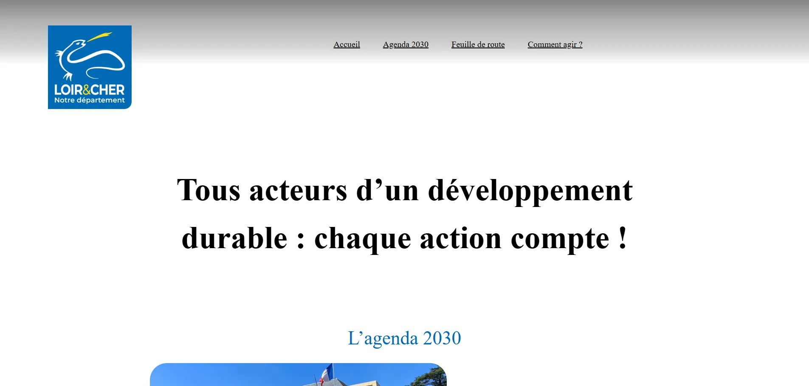
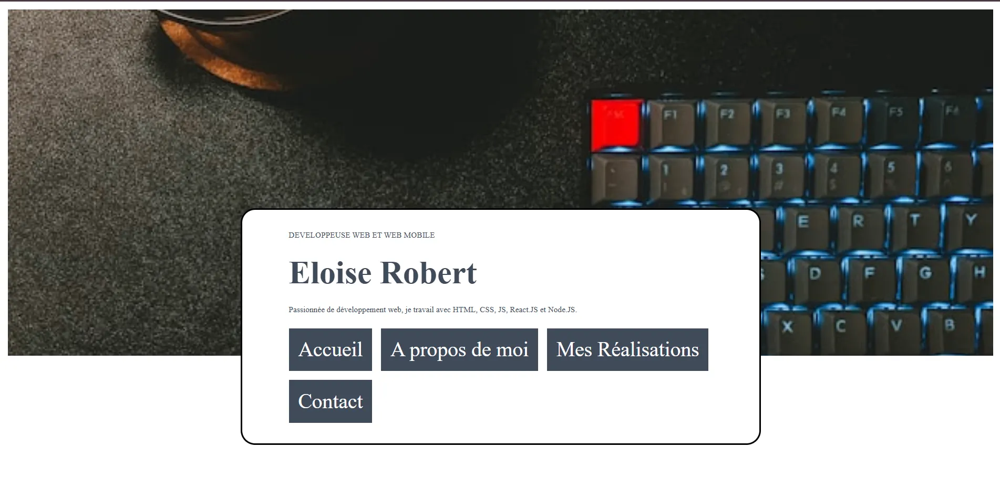

Mes Projets WordPress
Projet ODD
CMS
Projet client réalisé dans le but de passer la certification WordPress. Focus sur l'éco-conception et le développement durable.
Ancien Portfolio
CMS
Adaptation de mon premier design en thème WordPress pour apprendre la gestion des contenus dynamiques.